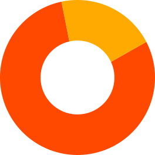

Ícones
Interface: traço de 24px com cor do texto, igual em todo o CRM. A versão animada é a do animateicons, sem mudar nada, e mexe ao passar o mouse e ao clicar. Origens: colorido, mesma caixa de 24px.
Interface
Animados (os componentes do animateicons; o smile não existe lá e fica parado)
Estáticos (SVG em icones/ui, herdam a cor do texto)
Tamanhos e cores
Em uso
Animação dos ícones
Ícones-chave são os do animateicons nos pontos de ícone do CRM
Ficam parados de propósito: .
Origem do lead
Origens (mesma caixa de 24px; o Google é só o G oficial)
Google orgânico precisa se distinguir do Google pago (escolha A ou B)
Google pago
A · G e folha
A grande
Google pago
B · lupa
B grande
Em uso
Logos das empresas
Logo da empresa (troca com a chave Névoa/Beec no topo)
